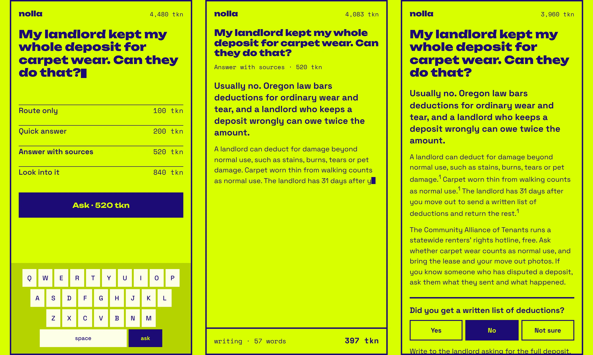
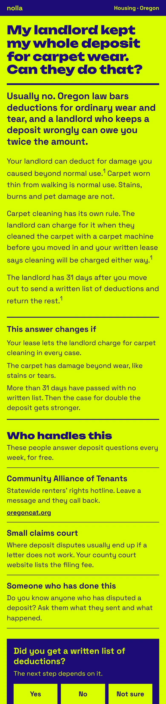
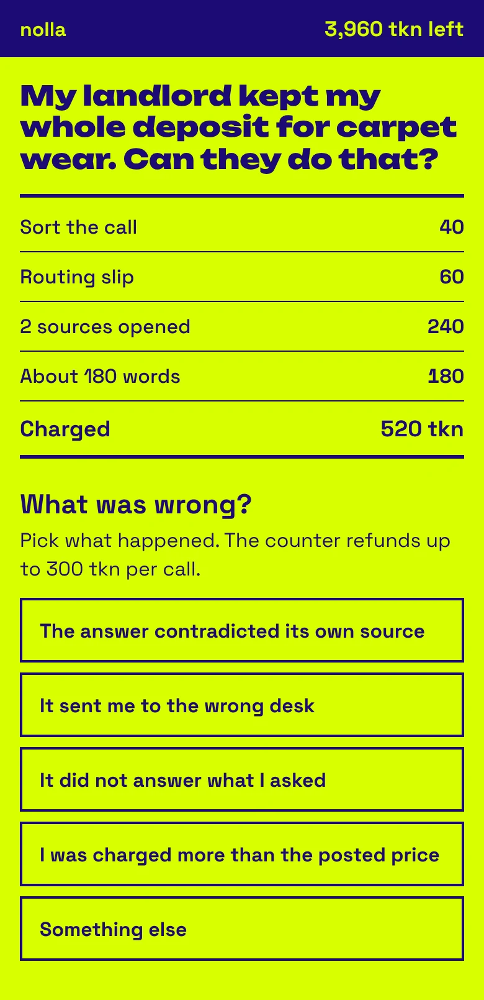
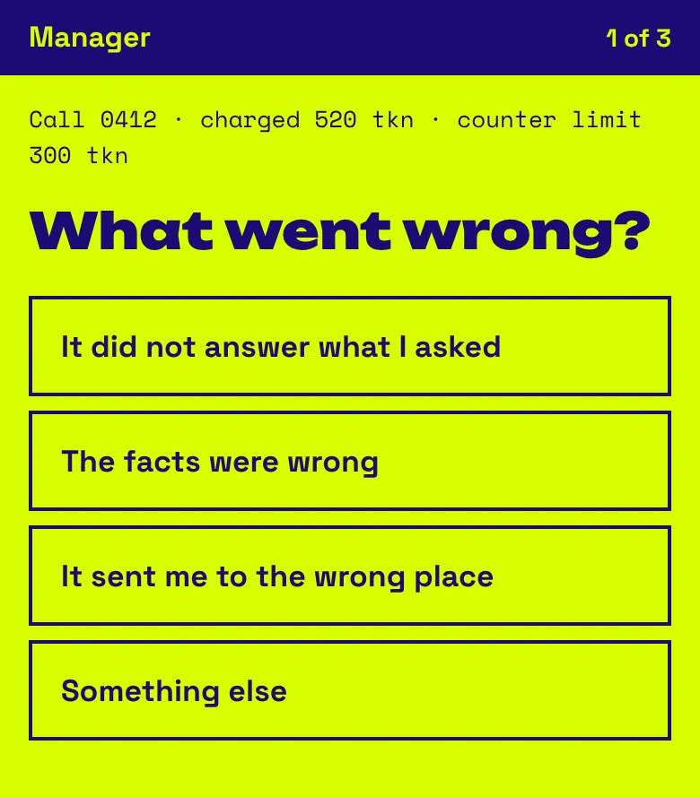
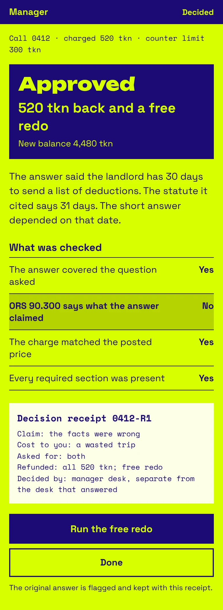
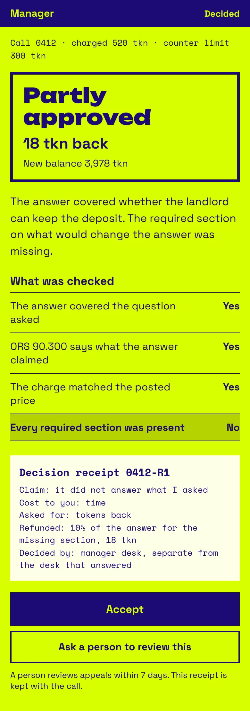
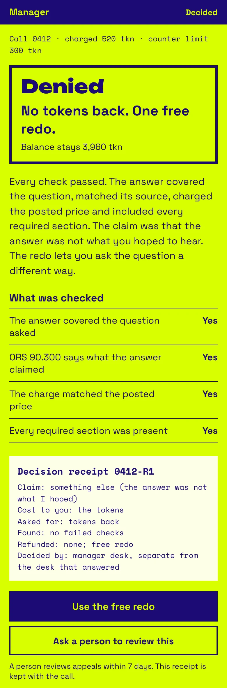
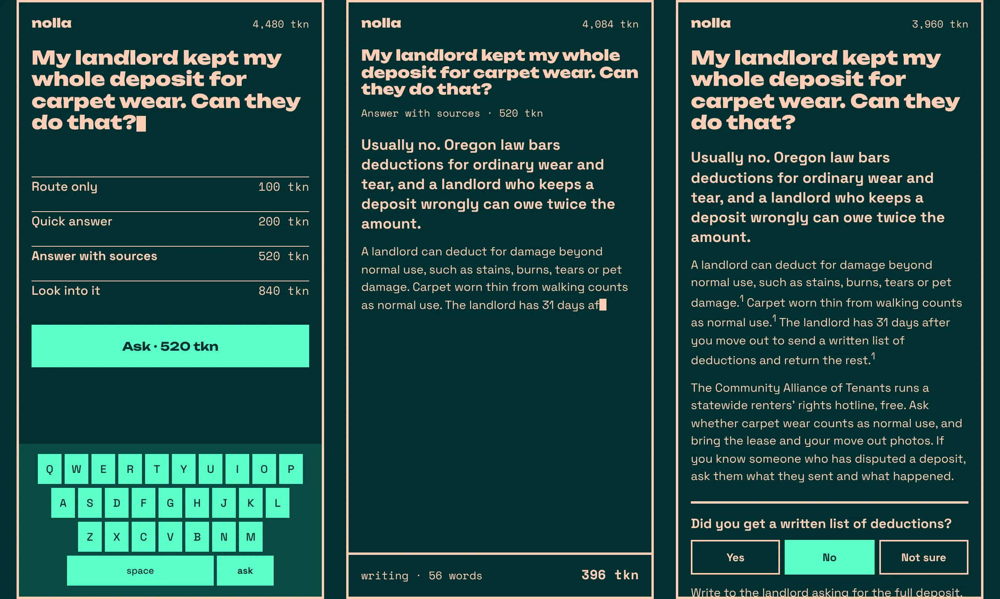

Nolla
A question desk I built on a large language model. You ask a question, the desk sorts it and posts a price, the answer writes itself while a meter runs, and you get a receipt. When the answer is wrong, the receipt goes to a counter for a refund.

The problem
Chat products charge a monthly subscription, and the cost of each answer stays hidden. Their interfaces are tuned to keep the conversation going, and they answer whatever you type, including questions a pharmacist, a librarian, or a tenants hotline would answer better. When an answer is wrong, the cost stays with the person who paid for it.
How the desk works
Every question is a call. The desk charges 40 tkn to sort it. Then it posts four prices before any work runs. A routing slip costs 100 tkn and a quick answer costs 200 tkn. An answer with sources costs 520 tkn, and a fuller look costs 840 tkn. Each price follows a fixed schedule you can check. A source costs 120 tkn to open, each word costs 1 tkn, and checking the answer against its sources costs 80 tkn. Each earlier turn in a thread adds 10%.
The answer streams onto the screen while a meter counts the words and the tokens spent, and the balance drops in the corner. The finished page gives the short answer, what the law says with its citation, the people who handle this kind of question, one question back, and a receipt. Every figure carries its unit. The balance refills each Monday.


Where the desk sends people
The desk answers what belongs at a reference desk and routes the rest. A deposit dispute goes to ORS 90.300 and the Community Alliance of Tenants. A medication question goes to a pharmacist. A question about opening a shop goes to the small business development center, and the desk asks whether you know someone who has run one. It suggests kinds of people and asks whether you know one. Your question stays at the top of the page in your own words.
Refunds
In Moffatt v. Air Canada, 2024 BCCRT 149, the British Columbia Civil Resolution Tribunal held Air Canada responsible for a refund policy its chatbot made up. I built the refund system on that case. Every charge is itemized, so every failure has a price. The counter refunds checkable problems on the spot, up to 300 tkn a call and 1,000 tkn a week. A claim above that goes to a manager desk, which asks three questions, runs the checks, and issues a decision receipt. A person reviews appeals within 7 days.




Two colorways
The desk runs in chartreuse and indigo in light mode and in teal and peach in dark mode. I computed the contrast ratio for every color pairing before it shipped: indigo on chartreuse is 13.6 to 1, peach on teal is 10.1 to 1.

How it’s built
- Rules
- A written skill gates an existing model: how to sort a call, what each price covers, how an answer is shaped, and when a refund applies.
- App
- Hono on Cloudflare Workers, a React and Vite front end, and zod schemas for the model’s structured output.
- Arithmetic
- Prices and refunds come from one shared module with tests, so every decision receipt can be recomputed.
- Access
- Cloudflare Access. The desk at 0000th.ai is invite only and stays that way.
- Copy
- An editorial policy for the desk, checked with prosekeep and plain-language-default.
- Records
- Agents wrote much of the code. Each build run ends with a closedtab after action record.
What changed after the first build
The first agent build added things outside the approved design. It put an exchange rate in the header, a formula under every option, and a footnote under the ask button, and it added a list of sample questions. I wrote UI guidelines that name each addition and rule out anything absent from the approved screens. They’re in the repo for the next build.